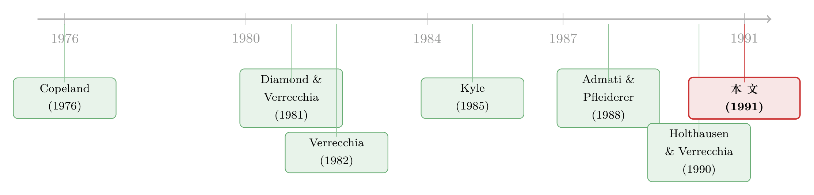

一场「早有预告」的财报，为什么反而让价格波澜不惊？
本文读的是 Kim & Verrecchia (1991, Journal of Financial Economics)：当一则公开公告"早被预期到"，投资者会在公告之前就多花钱去打探私有信息；结果是公告那一刻的价格反应反而更弱，而投资者之间的信息不对称却更大。论文给了一个干净的拆解——成交量 = |价格变化| × 信息不对称——并由此说明，为什么同一则公告对价格和对成交量的影响，常常是两副面孔。
1 一个被忽略的常识漏洞
财报发布日，价格会跳、成交会放量——这几乎是市场微观结构里的"日出日落"。但有一件事，长期被我们当成背景板：公告是被预期到的。所有人都知道这家公司每个季度某一天会披露盈利，知道劳工部某天会公布 CPI。这件"早有预告"本身，会不会改变公告落地那一刻的市场反应？
直觉会先给你一个答案，而且是个错的答案。直觉说：既然知道免费的信息马上要来，我何必先花钱去打探私有信息？等着白拿不就好了。照这个逻辑，"被预期"应该抑制私有信息的搜集。
Kim 和 Verrecchia 这篇 1991 年的论文，恰恰反过来。他们告诉你：预期一则公告，会刺激而不是抑制私有信息的搜集；而正是这个被忽略的渠道，让公告日的价格、成交量、信息不对称，长成了我们平时观察到的样子。
要把这件反直觉的事讲清楚，得先看懂一个机制：为什么"知道有公告要来"会让我更想去打探？
2 关键的直觉：交易机会从哪里来
先把场景搭好。模型有三期：第 1 期，投资者带着共同先验和精度各异的私有信号交易一轮；第 2 期，一则公开公告（比如 CPI、行业销量、或公司盈利）落地，再交易一轮；第 3 期，消费、清算。
私有信息是内生且有成本的：第 1 期里，每个投资者要决定自己花多少钱、把私有信号打磨到多精。注意——他打探信息，不只是为了第 1 期的交易，还为了第 2 期公告到来时的那一轮交易。
于是问题变成：第 2 期那轮交易，对我到底有没有"赚头"？论文给了一个极漂亮的判据。设想投资者 \(i\) 的私有信息精度恰好等于市场平均水平。那么公告落地后，他对资产的重新估值，和市场价格的变动完全同步——他不会想调仓，这一轮交易对他毫无价值。
但只要他的私有信息精度偏离平均（更高或更低），公告就会给他带来"别人尚不知道、而我能利用"的交易机会。换句话说：
第 2 期交易的价值，来自投资者彼此之间的差异，而不是公告本身。差异越大，预期到的那轮交易越值钱，第 1 期就越值得花钱去把私有信息做得"与众不同"。
这就是那个反直觉结论的发动机：预期到一则公告，等于预告了一轮"可以利用差异获利"的交易，从而激励投资者在事前把私有信息搞得更精、更独特。
接着，一个自然的问题是：这种激励，强弱取决于什么？答案落在公告的精度（quality / precision）上，而且关系是非单调的。
3 倒 U 形：信息不对称的两个"死亡区"
把公告精度 \(n\) 从 0 推到无穷，看信息不对称会怎么走。
一个极端，精度极低。 公告几乎不含信息，落地后没人会修正信念，也就没有可供交易的机会。既然预期到的那轮交易毫无赚头，事前也就没有额外动机去打探私有信息——信息不对称很小。
另一个极端，精度极高。 公告强到足以主宰所有人的信念和价格，公告一出，大家的看法瞬间被拉到同一处，彼此之间几乎没有差异可言，照样无机可乘。事前同样缺乏打探动机——信息不对称还是很小。
只有在中间，公告的冲击足够大、能制造交易机会，又没大到把所有信念和价格都拉向收敛。这时事前的私有信息搜集被最大限度地激励，信息不对称变得最大。
于是我们得到一条倒 U 形曲线：信息不对称 \(Q\) 在公告精度的两端都趋于零，在中间达到峰值。这是全文的"心脏"。（关于"公开信息质量本身的变化如何搅动市场"，可参见《分歧的两副面孔：当投资者争的不是「数字」，而是「数字有多可信」》。）
4 模型：把"成交量 = 价格变化 × 信息不对称"解出来
这是一篇理论论文，值得把骨架显式地搭一遍。
信念与禀赋。 资产的真实回报 \(\tilde{\theta}\) 服从正态先验，均值 \(\bar{\theta}\)、精度（方差的倒数）\(h\)：
$$\tilde{\theta} \sim N(\bar{\theta},\, 1/h)$$
投资者 \(i\) 被随机禀赋 \(x_i\) 份风险资产，其横截面平均 \(\bar{x} = \mathrm{Av}[x_i]\) 不可观测，服从
$$\bar{x} \sim N(0,\, 1/t)$$
这里 \(t\) 是噪声的反向刻度：\(t\) 越大，供给噪声越小，价格越"干净"。
两类信号。 第 1 期，投资者 \(i\) 选择并观测一个私有信号；第 2 期，所有人观测同一则公开公告：
$$\tilde{y}_i = \tilde{\theta} + \tilde{\varepsilon}_i,\qquad \tilde{\varepsilon}_i \sim N(0,\, 1/s_i)$$
$$\tilde{y} = \tilde{\theta} + \tilde{\nu},\qquad \tilde{\nu} \sim N(0,\, 1/n)$$
私有信号的精度 \(s_i\) 由投资者自己花钱买，成本 \(C_i(s_i) = B_i\, C(s_i)\)，其中 \(C(\cdot)\) 递增、凸、二阶连续可导（假设 C1–C2）；后文为求闭式解，进一步设成本线性 \(C(s_i) = \alpha s_i\)（假设 C3）。
偏好。 所有人是常绝对风险厌恶（CARA）：
$$u(\tilde{W}_i) = -\exp\!\big(-\tilde{W}_i / r_i\big)$$
\(r_i\) 是风险容忍度。最终财富 \(\tilde{W}_i\) 由两期价格 \(P_1, P_2\) 与两期持仓 \(D_{1i}, D_{2i}\) 决定。
贝叶斯更新。 公告是一个独立于私有信号的额外信号，精度可加。记 \(K_{1i}\)、\(K_{2i}\) 为投资者 \(i\) 在公告前后的信息总精度，则
$$K_{2i} = K_{1i} + n$$
投资者 \(i\) 第 2 期的需求，进取程度由他的风险容忍度 \(r_i\) 和信息质量 \(K_{2i}\) 共同决定——这正是前面"精度偏离平均才有交易动机"那句话的代数版本。
核心拆解。 沿用 Kim & Verrecchia (1991, JAR) 那篇姊妹论文的结果，第 2 期相对第 1 期的价格变化，可以写成"惊讶 + 噪声"被信息总精度缩放的形式：
$$P_2 - P_1 = \frac{1}{K_2}\big(\,\mathrm{Surprise} + \mathrm{Noise}\,\big)$$
其中 \(\mathrm{Surprise} = \tilde{y} - E[\tilde{\theta}\mid \tilde{y}_i, P_1]\) 是公告相对事前预期的意外部分，\(K_2\) 是平均信息精度。由此，价格变化对"惊讶"的敏感度是 \(n/K_2\)。
而真正把全文串起来的，是下面这个恒等式——第 2 期的成交量，等于价格变化的绝对值，乘上一个刻画投资者个体特异性的加总量 \(Q\)（即信息不对称）：
这一步看似平淡，却是全文的方法论支点。它把"成交量"这个纠缠的对象，正交地拆成了两块：一块是价格现象（\(|P_2-P_1|\) 及其方差），一块是信息不对称 \(Q\)。价格变化反映的是投资者信念的平均修正；成交量则源于信念修正的差异。于是成交量对惊讶的敏感度，恰好是价格敏感度乘以信息不对称，即 \(Q\,n/K_2\)。
这个拆解的好处是：任何关于成交量的命题，都能还原成"价格那一块"与"不对称那一块"的乘积。一旦两块的符号方向不同，成交量的方向就说不清——这正是论文一系列"模棱两可"结论的根源。（"没有交易也能有价格波动、有价格波动未必有交易"这条线，可参见《没人交易的那一天，股价照样在动》。）
5 比较静态：四组"符号"
理论论文给不出回归系数和 t 值，它给的是导数的符号。但这些符号本身，就是可检验的预言。
先验质量与噪声（命题 3、命题 5）。 当先验信息变好（\(h\uparrow\)）或噪声下降（\(t\uparrow\)），所有投资者都减少私有信息搜集，\(ds_i/dh < 0\)、\(ds_i/dt < 0\)。但奇妙的是，每个人减少的幅度相同：免费信息变多带来的精度提升，被私有搜集的下降恰好抵消，于是
$$\frac{dK_{1i}}{dh} = \frac{dK_{1i}}{dt} = 0,\qquad \frac{dQ}{dh} = \frac{dQ}{dt} = 0$$
总信息质量不变、信息不对称也不变——所以价格敏感度 \(n/K_2\) 与成交量敏感度 \(Q\,n/K_2\) 都不受影响。但因为残差不确定性下降了，价格变化的方差 \(\Delta = \mathrm{var}(P_2-P_1)\) 和预期成交量 \(\mu = E[\text{Volume}]\) 都下降。注意：这个"恰好抵消"严重依赖线性成本假设；换成更一般的凸成本，结论会被曲率搅乱。
边际成本与风险容忍（命题 4、命题 6）。 当所有人面对更高的信息搜集边际成本 \(\alpha\)（或风险容忍度更低），大家都买得起的私有信息更少、更不精，于是公告日的价格反应更强：\(\Delta\) 与价格敏感度 \(n/K_2\) 都上升。但与此同时，大家的信息水平被"拉得更齐"，信息不对称 \(Q\) 下降。于是成交量这一块——价格反应上升 × 不对称下降——方向无法确定：预期成交量 \(\mu\) 和成交量敏感度 \(Q\,n/K_2\) 既可能升、也可能降。
到这里，全文的张力已经摆明：同一个外生变量，往往把"价格"和"不对称"推向相反方向，使成交量成为一笔糊涂账。这不是模型的缺陷，而是它最诚实的地方。
6 反转：当公告"不被预期"或"质量未知"
前面一直假设公告及其精度都被正确预期到。论文最后松开这个假设，反转才真正落地。
预期 vs. 不预期（命题 7）。 把"无法预期的公告"（如并购协议、拆股、会计政策变更）刻画成事前预期精度 \(\tilde{n}=0\)，与可预期的 \(\tilde{n}=n\) 对照。结论是：对任何不完美的公告（\(0 < n < \infty\)），被预期时价格变化的方差 \(\Delta\) 与敏感度 \(n/K_2\) 都更小——因为预期刺激了事前私有信息搜集，价格在公告前就已被提前推动了一部分。
可是，预期同时抬高了信息不对称 \(Q\)。于是公告对成交量的影响——价格反应更小（向下）× 不对称更大（向上）——符号不定。这正是第 5 节那个张力的最直接体现。（"公告前的私有信息搜集如何改写公告日的价量"，可对照《公告日那点「凭空」的正收益，原来是有人在低价甩货》。）
质量未知的公告。 再设公告虽被预期、但精度未知，真实精度在披露时才揭晓。此时事前的私有信息搜集被固定的精度预期"锁死"，于是信息不对称 \(Q\) 也被钉在了预期水平上。结果：当揭晓的精度高于（低于）预期，价格反应与成交量反应同时变强（变弱），而且方向一致——因为 \(Q\) 不动，成交量就只剩"价格那一块"在说话，于是它和价格亦步亦趋。
这是个干净的可检验含义：当公告质量本身是个惊喜时，价量同向；当公告本身是个惊喜（不被预期）时，价量方向可能背离。
7 文献脉络
这条研究的源头，是噪声理性预期均衡（noisy rational expectations equilibrium）里的内生信息获取。Diamond & Verrecchia (1981) 在噪声 REE 里讨论了信息如何通过价格被聚合；Verrecchia (1982) 则给出了单期内生私有信息获取的均衡——本文在引言里直说，自己是 Verrecchia (1982) 的多期推广：把"信息获取"从一锤子买卖，扩展成"为了今天交易、也为了明天那则可预期的公告"的跨期决策。

另一条支流是成交量。为什么会有交易？Milgrom & Stokey (1982) 的无交易定理摆在那里：纯信息差异在共同知识下无法支撑交易。于是文献分头去找成交量的别的来源——Copeland (1976) 的序贯信息到达、Kyle (1985) 与 Glosten & Milgrom (1985) 的不同市场结构、Admati & Pfleiderer (1988) 的日内模式、以及 Holthausen & Verrecchia (1990)、Pfleiderer (1984)、Grundy & McNichols (1989)、Varian (1985) 各自强调的"对公开信息的不同解读""意见分歧"等。Karpoff (1987) 的综述把"成交量与价格变化绝对值正相关"这条经验规律钉成了共识。本文的位置很清楚：它没有再造一个新的成交量来源，而是把信息不对称单独拎出来，证明 \(\text{成交量} = |\text{价格变化}| \times \text{不对称}\)，并把这条经验规律内生地复现出来。
它直接的方法论搭档，是同年的 Kim & Verrecchia (1991, JAR)——那篇提供了价格变化与成交量的闭式表达，本篇则在它之上，把"信息获取的内生性"与"公告的可预期性"装了进来。论文的经验动机，则来自 Lakonishok & Vermaelen (1986)、Richardson, Sefcik & Thompson (1986) 这批用成交量和分析师预测做检验的实证工作。
8 评论与延伸（Q&A + 研究方向）
(a) 几个可能的疑问
Q：为什么"预期到免费信息"反而让人更想花钱打探，这不矛盾吗？
不矛盾。关键在于公告创造的交易机会，来自投资者彼此差异而非公告本身。预期到一轮可获利的交易，等于预告了"把私有信息做得与众不同就能赚钱"，于是事前更值得投入。免费信息抑制的是"为了知道真相"的动机，但放大了"为了和别人不一样"的动机。
Q：信息不对称对公告精度的"倒 U 形"，是结果还是假设？
是结果。两端的"死亡区"由两种机制各自压垮：精度太低→无机可乘；精度太高→信念被拉向收敛、同样无机可乘。中间地带才同时满足"有机会"且"不收敛"。这是模型推出来的，不是预设的。
Q：命题 3 里"先验变好但信息不对称纹丝不动"，可信吗？
它高度依赖线性成本（假设 C3）。线性成本下，免费信息的提升被私有搜集的削减一比一抵消，于是总精度和不对称都不变。论文自己承认，换成一般凸成本，曲率会让结论复杂化、不再干净。所以这个"零效应"应被理解为一个基准情形，而非普适规律。
Q：为什么这么多结论是"符号不定"？这是缺陷吗？
恰恰是诚实。成交量被拆成"价格 × 不对称"，当外生冲击把两块推向相反方向，成交量的符号在理论上就真的不确定。模型没有强行给一个方向，而是把这种不确定性的来源讲清楚了——这本身是贡献。
Q：模型里完全没有"对公开信息解读不一致"，会不会太干净？
是个有意的简化。本文假设所有人对公开公告的解读完全一致，成交量纯粹来自私有信息的差异。Holthausen & Verrecchia (1990)、Kandel & Pearson 一脉则强调"解读分歧"也能产生成交量。两条机制并存，本文只是把前者隔离出来研究。
Q：可预期 vs. 不可预期的对比，能在数据里干净识别吗？
理论上可以：盈利公告、CPI 是"可预期"的典型，并购、拆股、会计变更是"不可预期"的典型。但现实里二者还系统性地差在信息内容、行业、规模上，把"可预期性"单独剥出来并不容易——这正是下面研究方向的切入口。
(b) 几个可能的研究问题与提案
1. 公司债市场里的"可预期公告"价量拆解。 【经济故事】本文的核心拆解 \(\text{成交量}=|\Delta P|\times Q\) 在股票市场被反复检验，但公司债市场的公告反应几乎是另一套逻辑：做市商主导、交易稀疏、信息不对称更重。可预期的盈利/评级展望公告，在债市是否也表现出"被预期→价格反应更弱、不对称更大"？ 【可行性】中。数据用 TRACE 逐笔成交 + 评级机构的展望日历，把可预期（季报、定期评级复审）与不可预期（突发降级、违约）公告对照，比较公告窗口的价格方差与"成交量/|价格变化|"代理。识别难点是债券成交稀疏导致 \(Q\) 的代理噪声大，需要用同发行人多只债券做截面平滑。
2. 外资持有人的"差异化"是否放大了公告日的不对称。 【经济故事】本文说不对称来自私有信息的差异。外资与本地投资者的信息集天然不同，按模型逻辑，外资占比高的标的，公告日的 \(Q\)（成交量/|价格变化|）应当更大，而价格敏感度未必更高。 【可行性】中。用新兴市场的"可投资度"或外资持股数据，配合公告日的高频价量，检验外资占比与公告日 \(Q\) 的关系。识别上需处理外资占比的内生性（外资偏好流动性高、信息环境好的股票），可借"可投资度"放开作为外生冲击。
3. 把"质量未知公告→价量同向"做成事件研究。 【经济故事】命题里最干净的可检验含义：当公告质量本身是惊喜时（揭晓精度 ≠ 预期精度），价格与成交量反应同向变化。这给了一个区分"信息内容惊喜"与"信息质量惊喜"的实证设计。 【可行性】高。用分析师预测离散度的事前变化作为"预期精度"的代理，用实际盈利的可预测性（如随后修正幅度）作为"揭晓精度"，检验质量惊喜是否驱动价量同向。数据现成（I/B/E/S + CRSP），识别清晰，doable。
4. 线性成本假设的检验：先验质量冲击下，不对称真的不动吗？ 【经济故事】命题 3 预言"先验变好→不对称不变"，但这依赖线性成本。一个外生提升先验质量的事件（如强制披露规则、信息中介进入），按模型应让私有搜集等量下降而 \(Q\) 不变。若数据里 \(Q\) 显著变化，就反证了成本的非线性。 【可行性】中。用 Reg FD、XBRL 强制披露等"先验质量冲击"做 DiD，看公告日"成交量/|价格变化|"是否真的纹丝不动。难点是这类规则往往同时改变了私有信息的可得性，需要把"先验变好"与"私有渠道被堵"分开。
我的判断
这篇论文的贡献，不在于某个惊人的数字（它没有），而在于一个组织视角：把成交量正交地拆成"价格变化 × 信息不对称"，再把信息不对称内生于"对可预期公告的事前信息搜集"。这个拆解此后成了盈利公告价量文献的标准语言，影响力远超它本身的篇幅。它最反直觉、也最经得起琢磨的一点是：预期一则公告会削弱价格反应、却放大信息不对称——这把"为什么价量经常各说各话"讲成了一个机制，而不是一句搪塞。
对识别（这里是理论的"识别"，即结论的稳健性）我有两点担忧。其一，"恰好抵消"类的零效应高度依赖线性成本，一旦成本曲率上身，命题 3、命题 5 的干净结论会松动，论文自己也坦承了这一点。其二，模型把公开信息设为所有人解读一致，于是成交量被纯化成"私有信息差异"的产物；现实中"解读分歧"同样制造成交量，两者在数据里很难分开，这让模型的成交量预言在经验上偏理想化。
后续我最想看到的，是把这套"可预期性 × 信息不对称"的拆解，搬到信息环境更极端的市场去检验——尤其是公司债与外资主导的新兴市场。在那里，做市商结构和持有人异质性会把"价格那一块"和"不对称那一块"拉得更开，恰好是检验本文核心张力的天然实验场。
参考文献
- Admati, A. R., & Pfleiderer, P. (1988). A theory of intraday patterns: Volume and price variability. Review of Financial Studies 1(1), 3–40.
- Copeland, T. E. (1976). A model of asset trading under the assumption of sequential information arrival. Journal of Finance 31(4), 1149–1168.
- Diamond, D. W., & Verrecchia, R. E. (1981). Information aggregation in a noisy rational expectations economy. Journal of Financial Economics 9(3), 221–235.
- Glosten, L. R., & Milgrom, P. R. (1985). Bid, ask and transaction prices in a specialist market with heterogeneously informed traders. Journal of Financial Economics 14(1), 71–100.
- Grundy, B. D., & McNichols, M. (1989). Trade and the revelation of information through prices and direct disclosure. Review of Financial Studies 2(4), 495–526.
- Holthausen, R. W., & Verrecchia, R. E. (1990). The effect of informedness and consensus on price and volume behavior. Accounting Review 65(1), 191–208.
- Karpoff, J. M. (1987). The relation between price changes and trading volume: A survey. Journal of Financial and Quantitative Analysis 22(1), 109–126.
- Kim, O., & Verrecchia, R. E. (1991). Trading volume and price reactions to public announcements. Journal of Accounting Research 29(2), 302–321.
- Kyle, A. S. (1985). Continuous auctions and insider trading. Econometrica 53(6), 1315–1335.
- Lakonishok, J., & Vermaelen, T. (1986). Tax-induced trading around ex-dividend days. Journal of Financial Economics 16(3), 287–319.
- Milgrom, P., & Stokey, N. (1982). Information, trade and common knowledge. Journal of Economic Theory 26(1), 17–27.
- Richardson, G., Sefcik, S. E., & Thompson, R. (1986). A test of dividend irrelevance using volume reactions to a change in dividend policy. Journal of Financial Economics 17(2), 313–333.
- Verrecchia, R. E. (1982). Information acquisition in a noisy rational expectations economy. Econometrica 50(6), 1415–1430.